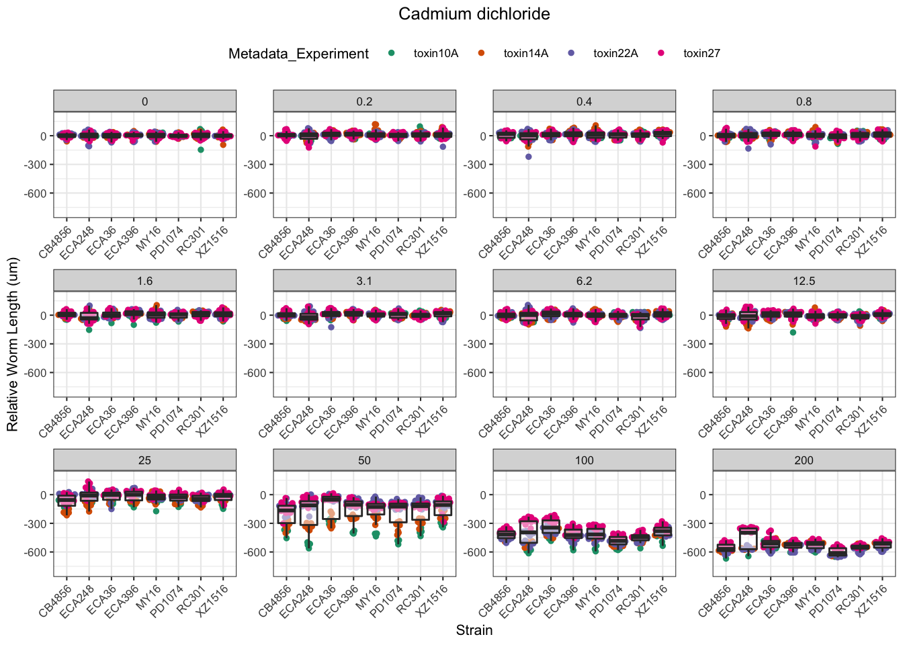
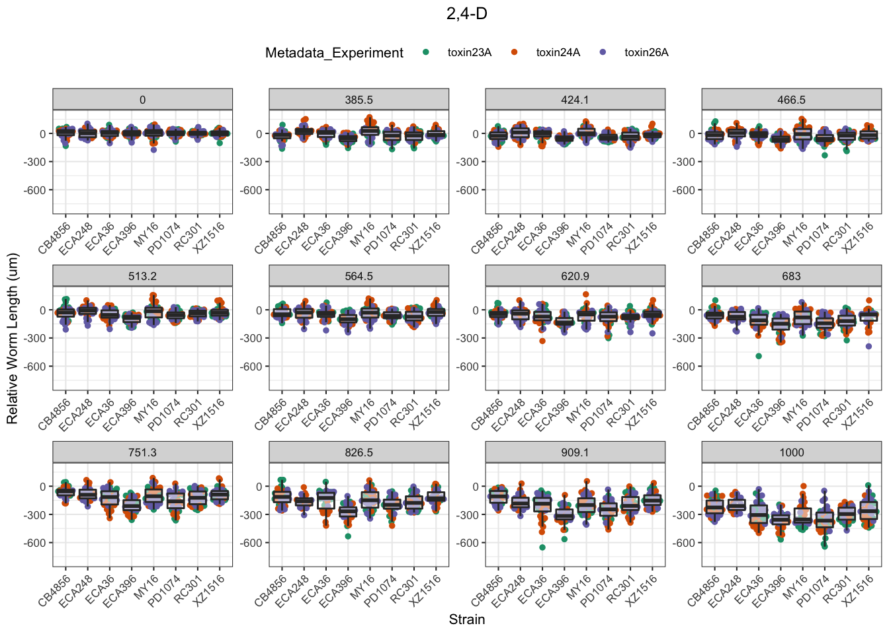
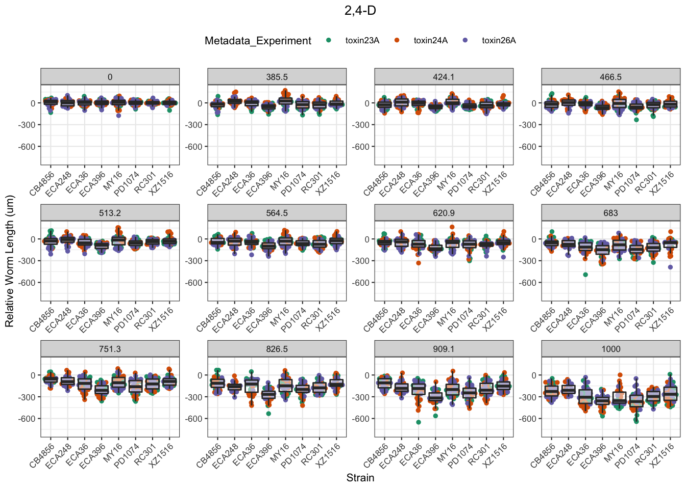
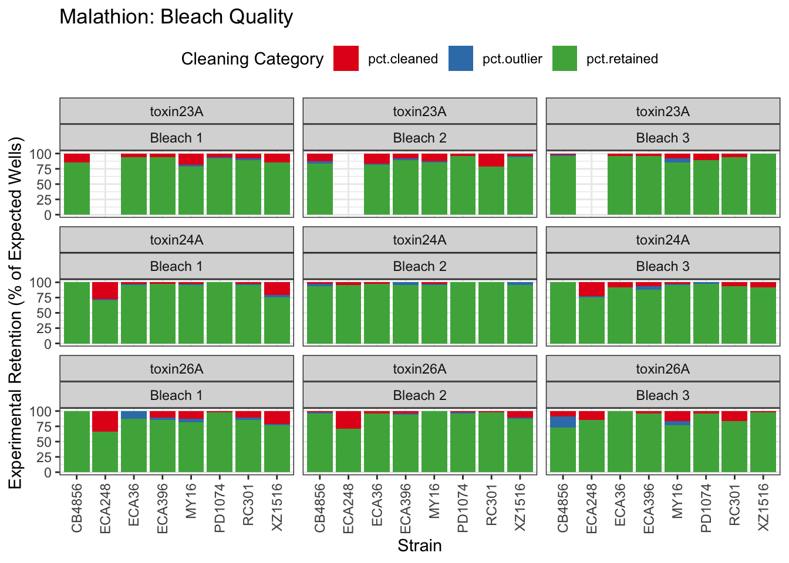
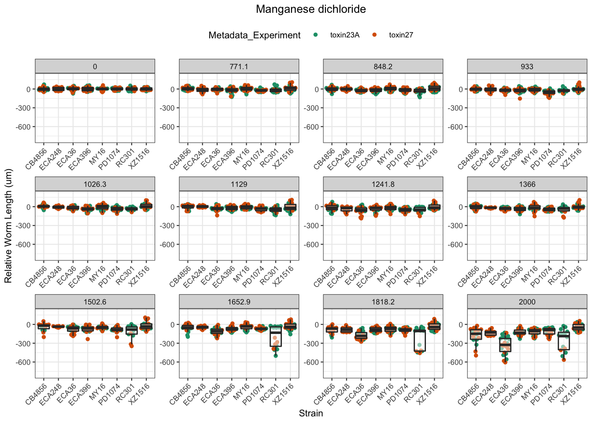
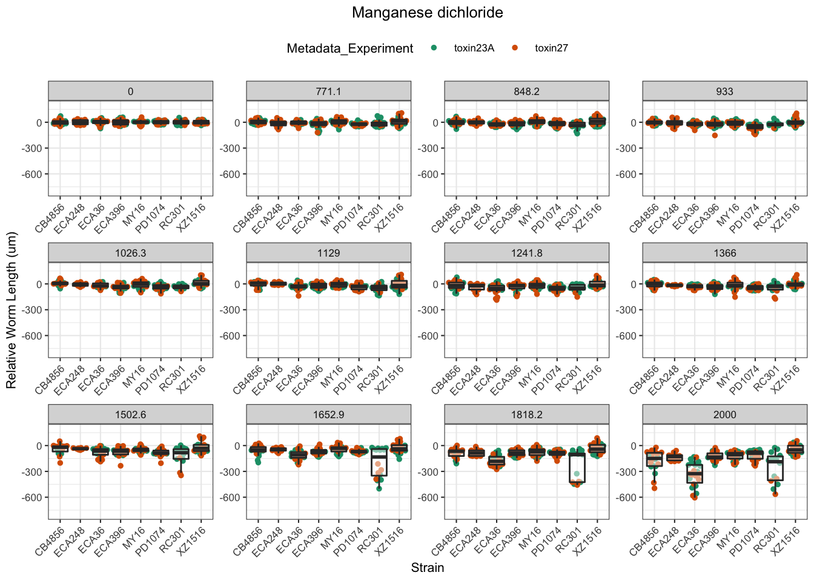
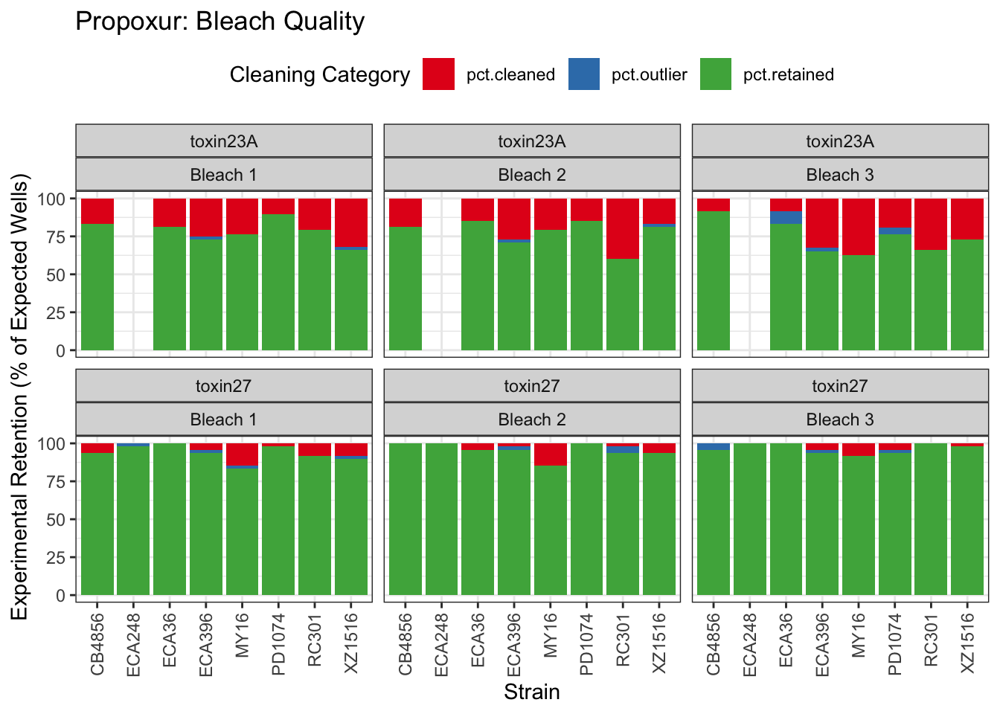
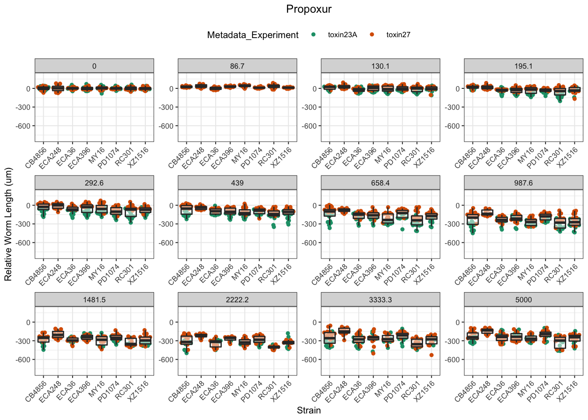

Dose-Response Assay Compilation
Last updated: 2021-03-21
Checks: 6 1
Knit directory: toxin_dose_responses/
This reproducible R Markdown analysis was created with workflowr (version 1.6.2). The Checks tab describes the reproducibility checks that were applied when the results were created. The Past versions tab lists the development history.
Great! Since the R Markdown file has been committed to the Git repository, you know the exact version of the code that produced these results.
Great job! The global environment was empty. Objects defined in the global environment can affect the analysis in your R Markdown file in unknown ways. For reproduciblity it’s best to always run the code in an empty environment.
The command set.seed(20210305) was run prior to running the code in the R Markdown file. Setting a seed ensures that any results that rely on randomness, e.g. subsampling or permutations, are reproducible.
Great job! Recording the operating system, R version, and package versions is critical for reproducibility.
Nice! There were no cached chunks for this analysis, so you can be confident that you successfully produced the results during this run.
Using absolute paths to the files within your workflowr project makes it difficult for you and others to run your code on a different machine. Change the absolute path(s) below to the suggested relative path(s) to make your code more reproducible.
| absolute | relative |
|---|---|
| ~/Documents/projects/toxin_dose_responses/ | . |
Great! You are using Git for version control. Tracking code development and connecting the code version to the results is critical for reproducibility.
The results in this page were generated with repository version 32ad79a. See the Past versions tab to see a history of the changes made to the R Markdown and HTML files.
Note that you need to be careful to ensure that all relevant files for the analysis have been committed to Git prior to generating the results (you can use wflow_publish or wflow_git_commit). workflowr only checks the R Markdown file, but you know if there are other scripts or data files that it depends on. Below is the status of the Git repository when the results were generated:
Ignored files:
Ignored: .DS_Store
Ignored: .Rhistory
Ignored: analysis/.DS_Store
Untracked files:
Untracked: data/drugclasses.csv
Untracked: output/3model.heatmap.png
Untracked: output/4model.heatmap.png
Untracked: output/Aldicarb_EC10.csv
Untracked: output/Aldicarb_EC50.csv
Untracked: output/Aldicarb_EC90.csv
Untracked: output/Arsenic trioxide_EC10.csv
Untracked: output/Atrazine_EC10.csv
Untracked: output/Atrazine_EC50.csv
Untracked: output/Cadmium dichloride_EC10.csv
Untracked: output/Cadmium dichloride_EC50.csv
Untracked: output/Cadmium dichloride_EC90.csv
Untracked: output/Carbaryl_EC10.csv
Untracked: output/Carbaryl_EC50.csv
Untracked: output/Carbaryl_EC90.csv
Untracked: output/Carboxin_EC10.csv
Untracked: output/Carboxin_EC50.csv
Untracked: output/Carboxin_EC90.csv
Untracked: output/Chlorfenapyr_EC10.csv
Untracked: output/Chlorfenapyr_EC50.csv
Untracked: output/Chlorfenapyr_EC90.csv
Untracked: output/Chlorpyrifos_EC10.csv
Untracked: output/Chlorpyrifos_EC50.csv
Untracked: output/Chlorpyrifos_EC90.csv
Untracked: output/Copper(II) chloride_EC10.csv
Untracked: output/Copper(II) chloride_EC50.csv
Untracked: output/Copper(II) chloride_EC90.csv
Untracked: output/H2.plot.20210306.png
Untracked: output/H2.plot.20210308.png
Untracked: output/H2.plot.20210314.png
Untracked: output/Lead(II) nitrate_EC10.csv
Untracked: output/Methomyl_EC10.csv
Untracked: output/Methomyl_EC50.csv
Untracked: output/Methomyl_EC90.csv
Untracked: output/Methylmercury dichloride_EC10.csv
Untracked: output/Methylmercury dichloride_EC50.csv
Untracked: output/Methylmercury dichloride_EC90.csv
Untracked: output/Nickel dichloride_EC10.csv
Untracked: output/Nickel dichloride_EC50.csv
Untracked: output/Nickel dichloride_EC90.csv
Untracked: output/Paraquat_EC10.csv
Untracked: output/Paraquat_EC50.csv
Untracked: output/Paraquat_EC90.csv
Untracked: output/Pyraclostrobin_EC10.csv
Untracked: output/Pyraclostrobin_EC50.csv
Untracked: output/Pyraclostrobin_EC90.csv
Untracked: output/Silver nitrate_EC10.csv
Untracked: output/Silver nitrate_EC50.csv
Untracked: output/Triphenyl phosphate_EC10.csv
Untracked: output/Triphenyl phosphate_EC50.csv
Untracked: output/Triphenyl phosphate_EC90.csv
Untracked: output/Zinc dichloride_EC10.csv
Untracked: output/Zinc dichloride_EC50.csv
Untracked: output/Zinc dichloride_EC90.csv
Untracked: output/cv.control.wells.csv
Unstaged changes:
Modified: analysis/doseresponsemodels.Rmd
Note that any generated files, e.g. HTML, png, CSS, etc., are not included in this status report because it is ok for generated content to have uncommitted changes.
These are the previous versions of the repository in which changes were made to the R Markdown (analysis/toxin8strains.Rmd) and HTML (docs/toxin8strains.html) files. If you’ve configured a remote Git repository (see ?wflow_git_remote), click on the hyperlinks in the table below to view the files as they were in that past version.
| File | Version | Author | Date | Message |
|---|---|---|---|---|
| Rmd | 32ad79a | sam-widmayer | 2021-03-21 | heatmap outputs |
| Rmd | 7ccc7de | sam-widmayer | 2021-03-21 | heatmap outputs |
| Rmd | 01b3361 | sam-widmayer | 2021-03-21 | heatmap outputs |
| Rmd | 7eb07f1 | sam-widmayer | 2021-03-21 | toxin23 updates and Worm_Length filter for MDHD data |
| html | 7ae886c | sam-widmayer | 2021-03-14 | Build site. |
| Rmd | 3f4a99b | sam-widmayer | 2021-03-14 | integrate toxin22 results |
| html | 212e0ae | sam-widmayer | 2021-03-08 | Build site. |
| html | cb6e132 | sam-widmayer | 2021-03-06 | Build site. |
| Rmd | 46c9647 | sam-widmayer | 2021-03-06 | static working directory |
| Rmd | 41bdaa0 | sam-widmayer | 2021-03-05 | dynamic working directory |
| Rmd | 0c9d312 | sam-widmayer | 2021-03-05 | initiate toxin DRC analysis repo |
Purpose:
- Compile past assay results.
- Provide dose-response curves for each toxin.
Analysis Date: March 21, 2021
Assay Summary


Metadata_Experiment bleach median cv.censor
1 toxin09A 1 0.3836145 0
2 toxin10A 1 0.4305145 0
3 toxin11A 1 0.4277093 0
4 toxin14A 1 0.3309190 0
5 toxin14A 2 0.6202207 1
6 toxin14A 3 0.3139512 0
7 toxin14B 1 0.3531075 0
8 toxin14B 2 0.6821373 1
9 toxin14B 3 0.4144394 0
10 toxin15A 1 0.3776043 0
11 toxin15A 2 0.3237794 0
12 toxin15A 3 0.5858180 1
13 toxin15B 1 0.3014705 0
14 toxin15B 2 0.3782805 0
15 toxin15B 3 0.5791055 1
16 toxin16A 1 0.3024091 0
17 toxin16A 2 0.6394078 1
18 toxin16A 3 0.6430524 1
19 toxin17A 1 0.3203867 0
20 toxin17A 2 0.5750981 1
21 toxin17A 3 0.3401813 0
22 toxin18A 1 0.3202607 0
23 toxin18A 2 0.3228881 0
24 toxin18A 3 0.3338709 0
25 toxin19A 1 0.3333869 0
26 toxin19A 2 0.3179010 0
27 toxin19A 3 0.3330344 0
28 toxin22A 1 0.2625332 0
29 toxin22A 2 0.2967801 0
30 toxin22A 3 0.2706957 0
31 toxin23A 1 0.3243216 0
32 toxin23A 2 0.3411546 0
33 toxin23A 3 0.2809086 0 Df Sum Sq Mean Sq F value Pr(>F)
assay 12 1.8077 0.1506 14.987 < 2e-16 ***
as.factor(bleach) 2 0.6899 0.3450 34.318 1.1e-13 ***
strain 7 0.0920 0.0131 1.307 0.248
assay:as.factor(bleach) 18 1.8073 0.1004 9.989 < 2e-16 ***
Residuals 218 2.1913 0.0101
---
Signif. codes: 0 '***' 0.001 '**' 0.01 '*' 0.05 '.' 0.1 ' ' 1Silver

| Version | Author | Date |
|---|---|---|
| cb6e132 | sam-widmayer | 2021-03-06 |


| Version | Author | Date |
|---|---|---|
| cb6e132 | sam-widmayer | 2021-03-06 |
Cadmium
[1] "Excluding toxin09A: Inconsistent Response"


Copper


Nickel


Paraquat


Zinc


Pyraclostrobin
[1] "Excluding toxin11A: Inconsistent Response"
| Version | Author | Date |
|---|---|---|
| cb6e132 | sam-widmayer | 2021-03-06 |


| Version | Author | Date |
|---|---|---|
| cb6e132 | sam-widmayer | 2021-03-06 |
Aldicarb

| Version | Author | Date |
|---|---|---|
| cb6e132 | sam-widmayer | 2021-03-06 |


| Version | Author | Date |
|---|---|---|
| cb6e132 | sam-widmayer | 2021-03-06 |
Chlorfenapyr
[1] "Excluding toxin09A, toxin10A, toxin11A, toxin12A: No Response/Variable Dilution"


Methomyl

| Version | Author | Date |
|---|---|---|
| cb6e132 | sam-widmayer | 2021-03-06 |


| Version | Author | Date |
|---|---|---|
| cb6e132 | sam-widmayer | 2021-03-06 |
Methyl Mercury

| Version | Author | Date |
|---|---|---|
| cb6e132 | sam-widmayer | 2021-03-06 |


| Version | Author | Date |
|---|---|---|
| cb6e132 | sam-widmayer | 2021-03-06 |
Triphenyl phosphate

| Version | Author | Date |
|---|---|---|
| cb6e132 | sam-widmayer | 2021-03-06 |


| Version | Author | Date |
|---|---|---|
| cb6e132 | sam-widmayer | 2021-03-06 |
Arsenic trioxide

| Version | Author | Date |
|---|---|---|
| cb6e132 | sam-widmayer | 2021-03-06 |


| Version | Author | Date |
|---|---|---|
| cb6e132 | sam-widmayer | 2021-03-06 |
Carbaryl

| Version | Author | Date |
|---|---|---|
| cb6e132 | sam-widmayer | 2021-03-06 |


| Version | Author | Date |
|---|---|---|
| cb6e132 | sam-widmayer | 2021-03-06 |
Carboxin

| Version | Author | Date |
|---|---|---|
| cb6e132 | sam-widmayer | 2021-03-06 |


| Version | Author | Date |
|---|---|---|
| cb6e132 | sam-widmayer | 2021-03-06 |
Chlorpyrifos
[1] "Excluding toxin17A: No Response"
| Version | Author | Date |
|---|---|---|
| cb6e132 | sam-widmayer | 2021-03-06 |


| Version | Author | Date |
|---|---|---|
| cb6e132 | sam-widmayer | 2021-03-06 |
Lead (II) nitrate
%20nitrate-1.png)
| Version | Author | Date |
|---|---|---|
| cb6e132 | sam-widmayer | 2021-03-06 |
%20nitrate-2.png)
%20nitrate-3.png)
| Version | Author | Date |
|---|---|---|
| cb6e132 | sam-widmayer | 2021-03-06 |
Atrazine
[1] "Excluding toxin16A: Inaccurate Dilution Series"
| Version | Author | Date |
|---|---|---|
| cb6e132 | sam-widmayer | 2021-03-06 |


| Version | Author | Date |
|---|---|---|
| cb6e132 | sam-widmayer | 2021-03-06 |
2,4-D
 

Malathion


Chlorothalonil


Deltamethrin


Error in optim(startVec, opfct, hessian = TRUE, method = optMethod, control = list(maxit = maxIt, :
non-finite finite-difference value [3]
[1] "Unable to optimize model"
[1] "Unable to optimize model"
Manganese dichloride
 

Propoxur

EC Estimates


Summary Tables
Table: Aldicarb Estimates
Strain Weibull Log-Logistic Lognormal
------- ------------- ------------- -------------
ECA396 112.12±6.55 126.01±6.39 126.59±6.09
CB4856 124.11±23.91 135.99±26.53 133.08±22.25
ECA36 129.21±10.9 149.93±11.74 148.64±11.04
MY16 74.86±4.91 80.84±4.6 81.03±4.53
XZ1516 135.86±9.43 155.1±10.51 157.17±10.39
RC301 91.18±6.87 100.35±5.66 99.9±5.37
PD1074 99.62±10.59 110.12±9.27 111.48±9.37
ECA248 102.21±10.69 111.97±9.05 112.18±8.55
Table: Aldicarb Estimates
Strain Weibull Log-Logistic Lognormal
------- ------------- ------------- -------------
ECA396 343.77±15.91 344.41±16.9 350.5±18
CB4856 277.31±23.53 258.2±27.9 252.71±24.74
ECA36 341.46±15.6 327±14.07 326.36±14.27
MY16 194.49±7.58 193.41±8.81 194.99±9.12
XZ1516 363.37±13.79 358.51±14.65 355.04±14.38
RC301 271.04±15.97 276.53±13.81 280.95±14.65
PD1074 227.68±10.98 216.37±11.45 216.59±10.98
ECA248 261.96±13.08 256.49±13.34 254.59±13.06
Table: Aldicarb Estimates
Strain Weibull Log-Logistic Lognormal
------- ------------- -------------- -------------
ECA396 702.05±55.35 941.37±103.34 970.5±107.62
CB4856 462.87±43.69 490.26±63.07 479.87±58.5
ECA36 634.32±48.97 713.19±70.11 716.57±65.63
MY16 357.41±22.4 462.74±49.16 469.25±50.66
XZ1516 680.19±42.77 828.69±84 802.02±75.75
RC301 542.7±62.63 762.04±84.34 790.13±88.88
PD1074 385.57±28.83 425.11±45.82 420.81±43.49
ECA248 477.21±46.82 587.58±63.39 577.76±59.72
Table: Arsenic trioxide Estimates
Strain Weibull Log-Logistic Lognormal
------- -------------- ------------- --------------
PD1074 424.78±310.18 852.9±932.35 639.16±201.42
Table: Atrazine Estimates
Strain Weibull Log-Logistic Lognormal
------- -------------- --------------- --------------
ECA248 231.03±45.22 305.76±96.3 610.18±710.96
PD1074 323.78±159.61 430.95±237.65 NA
XZ1516 259.56±83.83 338.98±134.82 604.71±670.12
RC301 180.06±17.9 221.04±30.53 279.45±92.4
CB4856 302.15±214.96 452.74±379.63 NA
ECA36 551.13±889.49 832.27±1429.92 NA
ECA396 259.49±90.99 400.28±199.19 NA
Table: Atrazine Estimates
Strain Weibull Log-Logistic Lognormal
------- -------------- -------------- ----------
ECA248 740.46±247.7 NA NA
XZ1516 914.35±412.62 NA NA
RC301 603.8±106.15 824.22±223.15 NA
Table: Cadmium dichloride Estimates
Strain Weibull Log-Logistic Lognormal
------- ----------- ------------- -----------
MY16 28.14±1.64 31.13±1.67 31.59±1.72
XZ1516 26.6±1.6 29.42±1.58 30.05±1.6
PD1074 23.53±1.31 26.57±1.35 27.06±1.33
ECA36 26.9±1.84 29.62±1.73 30.16±1.7
ECA396 29.31±1.55 32.27±1.51 32.85±1.53
RC301 23.34±1.43 26.19±1.52 26.79±1.54
ECA248 22.65±1.73 26.23±1.88 26.63±1.75
CB4856 20.86±1.29 23.39±1.27 23.74±1.23
Table: Cadmium dichloride Estimates
Strain Weibull Log-Logistic Lognormal
------- ----------- ------------- -----------
MY16 64.99±2.21 63.75±2.62 63.21±2.44
XZ1516 68.01±2.06 69.01±3.08 67.94±3.02
PD1074 61.28±1.93 60.8±2.43 60.08±2.3
ECA36 71.73±2.59 74.71±4.46 73.75±4.71
ECA396 66.46±1.97 64.6±2.33 64.11±2.13
RC301 62.37±2.07 63.72±2.98 62.59±2.91
ECA248 55.81±3.09 54.95±2.94 54.87±2.85
CB4856 63.35±2.51 67.13±4.23 66.89±4.73
Table: Cadmium dichloride Estimates
Strain Weibull Log-Logistic Lognormal
------- ------------ ------------- -------------
MY16 110.8±5.68 130.56±12.6 126.51±11.24
XZ1516 123.7±6.08 161.83±17.21 153.63±16.17
PD1074 112.75±5.64 139.09±13.24 133.39±11.7
ECA36 134±8.18 188.45±25.35 180.32±25.7
ECA396 111.97±4.91 129.34±10.75 125.14±9.36
RC301 116.68±6.33 155.04±17.73 146.24±16.32
ECA248 99.15±9.98 115.09±15.76 113.06±13.81
CB4856 128.58±8.32 192.63±26.29 188.48±28.18
Table: Carbaryl Estimates
Strain Weibull Log-Logistic Lognormal
------- ------------- ------------- --------------
RC301 153.86±13.45 206.66±31.25 318.49±148.7
MY16 115.77±4.5 131.85±4.29 135.52±4.16
XZ1516 138.51±5.63 160.03±6.16 167.91±8.08
ECA248 215.06±13.53 263.15±26.42 350.16±107.75
CB4856 200.77±7.47 224.45±7.79 232.64±9.74
ECA396 118.25±6.19 134.47±5.88 138.17±5.63
ECA36 282.12±38.73 391.53±85.12 NA
Table: Carbaryl Estimates
Strain Weibull Log-Logistic Lognormal
------- -------------- -------------- -------------
RC301 560.72±88.19 899.1±242.48 NA
MY16 329.43±10.08 372.72±19.75 377.73±25.18
XZ1516 396.9±19.22 480.15±41.68 527.38±71.69
ECA248 599.91±67.03 828.28±158.41 NA
CB4856 477.83±21.16 543.72±40.07 589.88±68.61
ECA396 334.69±14.2 365.03±24.39 365.57±28.19
ECA36 823.29±165.63 NA NA
Table: Carbaryl Estimates
Strain Weibull Log-Logistic Lognormal
------- ------------- ------------- -----------
MY16 641.47±34.4 NA NA
XZ1516 776.32±60.67 NA NA
CB4856 830.35±58.18 NA NA
ECA396 649.51±47.04 990.92±136.9 967.21±149
Table: Carboxin Estimates
Strain Weibull Log-Logistic Lognormal
------- ------------- ------------- -------------
RC301 245.37±13.69 268.12±13.33 271.54±13.17
MY16 208.99±11.87 232.92±11.41 236.38±11.06
XZ1516 246.6±16.77 281.8±17.27 286.26±17.03
PD1074 294.44±24.48 321.2±23.59 326.03±23.43
ECA248 264.83±20 294.25±19.9 298.93±19.58
CB4856 218.08±16.13 242.89±15.96 246.14±15.48
ECA396 270.53±11.22 295.77±10.69 298.53±10.38
ECA36 343.43±23.11 376.82±22.71 382.09±22.25
Table: Carboxin Estimates
Strain Weibull Log-Logistic Lognormal
------- ------------- ------------- -------------
RC301 518.27±12.99 520.48±15.19 514.66±14.85
MY16 542.31±16.17 559.04±22.25 551.86±22.67
XZ1516 634.1±24.55 652.59±34.08 647.19±35.34
PD1074 762.58±35.12 837.75±72.34 829.67±86.63
ECA248 653.85±27.45 672.27±39.66 662.19±40.07
CB4856 567.38±22.5 585.55±31.62 575.34±31.85
ECA396 543.23±11.13 538.19±12.02 534.45±11.71
ECA36 721.61±27.71 712.59±33.79 705.55±31.94
Table: Carboxin Estimates
Strain Weibull Log-Logistic Lognormal
------- --------------- --------------- ---------------
RC301 834.65±39.4 1010.37±74.89 975.44±68.53
MY16 995.79±54.82 1341.73±127.72 1288.38±122.31
XZ1516 1157.57±81.68 1511.25±193.26 1463.19±189.76
PD1074 1398.49±106.11 NA NA
ECA248 1163.1±82.92 1535.93±209.95 1466.89±201.43
CB4856 1043.54±72.96 1411.64±179.5 1344.81±169.67
ECA396 847.09±31.39 979.33±52.28 956.83±47.61
ECA36 1158.26±71.01 1347.56±144.72 1302.84±129.29
Table: Chlorfenapyr Estimates
Strain Weibull Log-Logistic Lognormal
------- ---------- ------------- ----------
ECA248 0.19±0.01 0.2±0.01 0.2±0.01
XZ1516 0.31±0.01 0.35±0.02 0.35±0.02
ECA36 0.94±0.03 1.03±0.03 1.04±0.02
CB4856 0.29±0.01 0.29±0.01 0.29±0.01
PD1074 0.35±0.01 0.35±0.01 0.34±0.01
RC301 0.22±0.01 0.23±0.01 0.24±0.01
MY16 0.21±0.01 0.22±0.01 0.23±0.01
ECA396 NA 0.54±0.01 0.54±0.01
Table: Chlorfenapyr Estimates
Strain Weibull Log-Logistic Lognormal
------- ---------- ------------- ----------
ECA248 0.49±0.02 0.49±0.02 0.49±0.02
XZ1516 0.67±0.01 0.67±0.01 0.67±0.01
ECA36 1.65±0.04 1.53±0.05 1.54±0.04
CB4856 0.56±0.01 0.56±0.01 0.55±0.01
PD1074 0.6±0.01 0.61±0.01 0.61±0.01
RC301 0.49±0.01 0.48±0.01 0.48±0.01
MY16 0.51±0.01 0.5±0.01 0.5±0.01
ECA396 NA 0.75±0.02 0.76±0.02
Table: Chlorfenapyr Estimates
Strain Weibull Log-Logistic Lognormal
------- ---------- ------------- ----------
ECA248 0.92±0.06 1.22±0.11 1.18±0.11
XZ1516 1.1±0.05 1.27±0.08 1.27±0.07
ECA36 2.35±0.1 2.27±0.17 2.26±0.15
CB4856 0.85±0.02 1.06±0.05 1.05±0.04
PD1074 0.84±0.02 1.07±0.04 1.1±0.04
RC301 0.81±0.02 1±0.05 0.96±0.04
MY16 0.89±0.03 1.13±0.06 1.1±0.06
ECA396 NA 1.04±0.06 1.06±0.05
Table: Chlorothalonil Estimates
Strain Weibull Log-Logistic Lognormal
------- ------------ ------------- ------------
CB4856 56.12±15.88 57.18±11.76 58.03±11.27
ECA36 5.77±2.69 10.92±10.63 26.4±69.2
ECA396 36.35±5.25 44.47±8.22 52.94±23.97
XZ1516 43.81±8.96 48.18±7.94 49.29±8.24
Table: Chlorothalonil Estimates
Strain Weibull Log-Logistic Lognormal
------- ------------- -------------- --------------
CB4856 120.03±12.84 143.37±47.58 154.83±101.63
ECA36 81.35±75.96 240.94±452.37 NA
ECA396 121.84±23.79 174.49±69.55 NA
XZ1516 112.35±14.12 134.26±39.1 144.69±70.86
Table: Chlorothalonil Estimates
Strain Weibull Log-Logistic Lognormal
------- ------------- ------------- ----------
CB4856 194.87±42.46 NA NA
XZ1516 204.75±47.75 NA NA
Table: Chlorpyrifos Estimates
Strain Weibull Log-Logistic Lognormal
------- ------------ ------------- ------------
MY16 15.55±39.17 NA NA
XZ1516 2.72±0.14 3.2±0.18 3.53±0.37
PD1074 2.71±4.57 8.49±13.73 NA
ECA248 2.06±0.98 3.57±2.32 12.24±14.97
CB4856 3.88±3.06 10.87±10.59 NA
ECA396 3.79±6.17 10.36±20.26 NA
ECA36 1.81±0.11 2.27±0.18 2.67±0.41
Table: Chlorpyrifos Estimates
Strain Weibull Log-Logistic Lognormal
------- ------------ ------------- -----------
XZ1516 8.19±0.61 10.39±1.32 13.29±3.38
ECA248 17.87±12.12 NA NA
ECA36 7.39±0.76 10.32±1.69 14.8±4.74
Table: Chlorpyrifos Estimates
Strain Weibull Log-Logistic Lognormal
------- ----------- ------------- ----------
XZ1516 16.56±1.87 NA NA
ECA36 18.1±2.6 NA NA
Table: Copper(II) chloride Estimates
Strain Weibull Log-Logistic Lognormal
------- ------------- ------------- -----------
PD1074 173.47±169.3 51.04±2.93 54.15±5.88
ECA396 NA 52.9±3.01 53.22±2.88
MY16 NA 50.75±2.98 59.68±4.3
Table: Copper(II) chloride Estimates
Strain Weibull Log-Logistic Lognormal
------- -------- ------------- -------------
ECA396 NA 112.25±9.11 118.79±15.9
MY16 NA 108.46±8.44 96.73±4.04
PD1074 NA 111.77±9.35 163.21±42.85
Table: Copper(II) chloride Estimates
Strain Weibull Log-Logistic Lognormal
------- -------- ------------- -------------
MY16 NA NA 156.76±16.54
Table: Deltamethrin Estimates
Strain Weibull Log-Logistic Lognormal
------- ---------- ------------- ------------
PD1074 0.04±0.23 0.33±2.41 0.43±2.35
CB4856 0.15±0.58 16.9±76.2 21.17±77.68
ECA36 0±0 0±0 0±0
MY16 0.21±0.46 0.49±2.62 0.91±4.32
ECA396 0.18±0.67 26.52±85.9 1.36±3.48
RC301 0.54±4.71 0.98±4.87 2.43±14.96
XZ1516 0±0 NA 0±0
Table: Deltamethrin Estimates
Strain Weibull Log-Logistic Lognormal
------- --------------- --------------- --------------
ECA36 319.82±7642.14 38.64±432.2 22.07±288.54
XZ1516 0±0 NA 24.67±2748.05
PD1074 NA 306.46±2784.41 466.6±6933.93
CB4856 NA 163.38±158.03 156.8±160.65
ECA396 NA 181.73±145.01 NA
Table: Deltamethrin Estimates
Strain Weibull Log-Logistic Lognormal
------- -------- ---------------- ---------------
CB4856 NA 1579±4811.27 1161.27±2335.7
ECA396 NA 1245.31±2455.33 NA
Table: Lead(II) nitrate Estimates
Strain Weibull Log-Logistic Lognormal
------- -------------- ------------- ----------
ECA36 233.52±141.68 556.99±619.9 NA
Table: Malathion Estimates
Strain Weibull Log-Logistic Lognormal
------- ------------ ------------- ------------
PD1074 23.38±5.57 32.16±5.74 34.37±5.75
CB4856 37.47±12.69 51.06±12.04 52.8±11.44
ECA36 52.21±23.96 74.08±24.82 82.72±26.64
MY16 50.73±8.4 57.44±7.45 59.2±7.24
ECA396 53.66±16.21 58.9±11.51 60.02±11.17
RC301 26.79±7.52 33.87±7.53 36.44±7.55
XZ1516 44.87±15.38 61.94±15.56 64.25±15
Table: Malathion Estimates
Strain Weibull Log-Logistic Lognormal
------- -------------- -------------- --------------
PD1074 154.38±10.86 157.82±12.24 154.06±11.59
CB4856 175.75±20.78 171.94±20.27 169.99±19.63
ECA36 826.08±749.85 673.98±575.97 762.07±748.28
MY16 132.28±8.01 129.05±8.04 128.59±7.92
ECA396 139.32±12.36 139.18±12.39 139.32±12.6
RC301 111.73±8.82 111.5±8.85 110.06±8.54
XZ1516 263.57±42.28 259.64±46.02 261.51±46.06
Table: Malathion Estimates
Strain Weibull Log-Logistic Lognormal
------- -------------- --------------- --------------
PD1074 514.01±81.58 774.58±180.7 690.48±145.59
CB4856 470.6±119.79 578.93±170.64 547.25±144.12
MY16 243.66±28.53 289.95±44.88 279.33±41.09
ECA396 255.9±63.76 328.87±82.9 323.39±79.35
RC301 277.6±44.22 366.99±86.78 332.44±70.03
XZ1516 814.57±288.25 1088.28±513.89 1064.4±475.3
Table: Manganese dichloride Estimates
Strain Weibull Log-Logistic Lognormal
------- ---------------- --------------- --------------
PD1074 493.38±73.5 586.18±125.39 639.75±257.73
MY16 1820.28±1973.15 NA NA
RC301 1141.28±129.55 1212.69±191.27 NA
Table: Manganese dichloride Estimates
Strain Weibull Log-Logistic Lognormal
------- --------------- ---------------- ----------------
PD1074 1220.87±307.8 1655.46±1033.91 1906.81±2140.97
RC301 1575.29±155.27 1871.07±792.42 NA
Table: Manganese dichloride Estimates
Strain Weibull Log-Logistic Lognormal
------- -------------- ------------- ----------
RC301 1934.45±391.2 NA NA
Table: Methomyl Estimates
Strain Weibull Log-Logistic Lognormal
------- ----------- ------------- -----------
ECA396 9.84±0.65 11.14±0.66 11.23±0.66
CB4856 9.52±0.76 10.68±0.77 10.81±0.76
ECA36 7.37±0.55 8.63±0.56 8.8±0.56
MY16 9±0.75 10.18±0.8 10.26±0.8
XZ1516 5.68±0.47 6.64±0.48 6.71±0.47
RC301 9.3±0.77 10.53±0.73 10.53±0.71
PD1074 6.36±0.6 7.36±0.6 7.51±0.6
ECA248 11.36±0.79 12.7±0.78 12.77±0.79
Table: Methomyl Estimates
Strain Weibull Log-Logistic Lognormal
------- ----------- ------------- -----------
ECA396 34.87±1.84 39.44±3.32 40.8±4.46
CB4856 32.53±1.51 33.54±2.07 32.91±2.09
ECA36 30.44±1.18 31.58±1.56 30.96±1.57
MY16 28.98±1.33 28.96±1.66 28.3±1.61
XZ1516 27.78±1.53 29.89±2.22 29.78±2.42
RC301 33.24±1.81 36.71±2.83 37.62±3.53
PD1074 26.35±1.83 29.04±2.83 29.15±3.24
ECA248 39.06±1.59 40.21±2.03 39.87±2.12
Table: Methomyl Estimates
Strain Weibull Log-Logistic Lognormal
------- ----------- ------------- -------------
ECA396 78.11±6.67 139.62±23.51 148.17±31.72
CB4856 71.16±5.49 105.36±14.51 100.13±13.94
ECA36 75.12±5.42 115.61±13.69 108.87±12.94
MY16 61.04±4.27 82.42±10.52 78.1±9.63
XZ1516 76.39±7.1 134.48±21.6 132.25±22.74
RC301 74.82±7.51 127.94±21.66 134.35±26.78
PD1074 65.17±7.62 114.61±23.69 113.17±26.23
ECA248 85.82±6.18 127.32±14.83 124.45±15.16
Table: Methylmercury dichloride Estimates
Strain Weibull Log-Logistic Lognormal
------- ---------- ------------- ----------
ECA396 1.05±0.12 1.31±0.13 1.35±0.13
CB4856 0.68±0.08 0.91±0.1 0.96±0.1
ECA36 0.79±0.13 1.1±0.18 1.23±0.22
MY16 1.03±0.15 1.23±0.16 1.26±0.16
XZ1516 0.74±0.13 1.04±0.17 1.14±0.21
RC301 1.37±0.18 1.75±0.2 1.84±0.21
PD1074 0.75±0.11 1.04±0.14 1.13±0.16
ECA248 0.43±0.09 0.61±0.11 0.66±0.11
Table: Methylmercury dichloride Estimates
Strain Weibull Log-Logistic Lognormal
------- ----------- ------------- ------------
ECA396 8.69±0.85 10.59±1.5 10.53±1.71
CB4856 6.92±0.61 7.66±0.88 7.5±0.9
ECA36 15.07±3.2 21.54±7.13 25.33±11.29
MY16 7.82±0.91 9.85±1.71 9.85±2.02
XZ1516 11.83±2.33 18.22±5.86 22.18±10.44
RC301 10.67±1.12 12.6±1.98 12.3±2.15
PD1074 10.63±1.58 15.58±4.06 17.27±6.2
ECA248 7.46±1.51 10.05±3.23 10.39±4.05
Table: Methylmercury dichloride Estimates
Strain Weibull Log-Logistic Lognormal
------- ------------ -------------- --------------
ECA396 33.31±5.19 85.89±23.96 81.91±25.72
CB4856 30.2±4.65 64.78±16.36 58.97±15.12
ECA36 98.83±30.79 NA NA
MY16 28.46±5.34 78.6±27.08 76.92±30.83
XZ1516 68.94±21.27 NA NA
RC301 39.45±6.9 90.92±29.86 81.99±29.46
PD1074 57.4±13.6 232.51±114.01 NA
ECA248 45.92±14.94 165.72±102.87 162.97±119.71
Table: Nickel dichloride Estimates
Strain Weibull Log-Logistic Lognormal
------- ----------- ------------- -----------
ECA396 49.7±2.61 50.33±2.22 50.28±1.96
CB4856 50.68±2.88 51.22±2.44 51.25±2.14
ECA36 55.05±3 59.22±1.98 60.9±2.14
MY16 44.68±2.65 47.86±2.13 48.35±1.95
PD1074 63.57±3.9 65.07±3.39 63.88±2.57
Table: Nickel dichloride Estimates
Strain Weibull Log-Logistic Lognormal
------- ------------ ------------- -------------
ECA396 86.77±1.57 85.7±1.93 84.36±1.9
CB4856 88.1±1.64 87.41±2.05 86.07±2.05
ECA36 109.91±3.92 125.24±10.24 137.56±20.11
MY16 97.46±2.88 108.47±6.75 112.38±10.43
PD1074 106.19±1.94 111.39±4.78 115.71±7.37
Table: Nickel dichloride Estimates
Strain Weibull Log-Logistic Lognormal
------- ------------- ------------- ------------
ECA396 123.76±3.33 145.93±7.24 141.52±6.56
CB4856 125.33±3.7 149.18±8.14 144.55±7.32
ECA36 170.78±14.03 NA NA
MY16 160.2±10.06 NA NA
PD1074 147.27±8.23 190.66±24.01 NA
Table: Paraquat Estimates
Strain Weibull Log-Logistic Lognormal
------- ----------- ------------- -----------
MY16 42.55±3.71 40.32±2.97 39.4±2.61
XZ1516 48.85±4.7 57.25±4.48 58.59±4.23
CB4856 40.38±3.35 40.62±2.9 39.46±2.7
RC301 15.69±1.75 22.62±1.85 22.84±1.66
PD1074 29.52±2.8 30.58±2.27 29.76±2.09
ECA248 29.11±3.68 28.73±2.32 28.45±2.28
ECA36 56.24±4.19 46.32±3.49 45.9±3.55
ECA396 15±1.59 21.65±1.64 21.82±1.5
Table: Paraquat Estimates
Strain Weibull Log-Logistic Lognormal
------- ------------- ------------- -------------
MY16 128.8±6.47 150.04±10.7 165.36±12.34
XZ1516 314.23±28.05 290.36±31.96 302.27±32.74
CB4856 127.35±6.29 138.36±8.69 149.29±10.9
RC301 132.47±13.53 113.76±9.99 124.26±10.77
PD1074 113.95±5.71 125.91±7.83 135.98±9.95
ECA248 86.06±4.61 94.06±5.71 97.15±6.63
ECA36 105.31±2.6 112.07±5.17 114.49±6.19
ECA396 126±11.04 108.5±7.86 116.76±8.2
Table: Paraquat Estimates
Strain Weibull Log-Logistic Lognormal
------- --------------- --------------- ---------------
MY16 260.88±26.76 558.39±99.17 694.04±118.65
XZ1516 1028.95±140.69 1472.55±311.42 1559.55±320.79
CB4856 264.81±25.8 471.32±74.8 564.83±99.15
RC301 515.82±96.76 572.24±118.93 676.16±128.82
PD1074 269.52±29.21 518.5±83.42 621.42±110.72
ECA248 171.73±23.93 307.92±49.24 331.75±57.85
ECA36 157.05±6.09 271.17±37.15 285.56±44.67
ECA396 489.11±80.73 543.61±93.74 624.93±97.74
Table: Propoxur Estimates
Strain Weibull Log-Logistic Lognormal
------- ------------- ------------- -------------
PD1074 102.71±17.64 128.4±18.79 135.24±17.89
CB4856 204.62±27.23 227.04±26.01 229.08±24.5
ECA36 147±24.67 172.88±24.52 174.54±23.12
MY16 129.82±15.09 146.53±15.24 148.41±14.36
ECA396 97.45±18.41 121.89±18.14 126.27±17.17
RC301 85.92±11.72 103.31±11.88 108.98±11.35
XZ1516 156.32±21.94 182.46±20.94 185.29±19.86
Table: Propoxur Estimates
Strain Weibull Log-Logistic Lognormal
------- ------------- ------------- -------------
PD1074 462.46±37.45 445.04±41.43 432.96±37.42
CB4856 494.38±28.99 472.34±29.93 468.21±28.86
ECA36 454.63±31.42 438.07±32.39 431.67±31.38
MY16 367.86±17.6 359.19±19.56 352.43±18.96
ECA396 353.17±31.85 336.68±31.64 334.18±29.93
RC301 367.75±22.54 361.68±25.85 352.48±23.76
XZ1516 407.88±25.76 388.23±25.26 386.84±24.42
Table: Propoxur Estimates
Strain Weibull Log-Logistic Lognormal
------- --------------- --------------- ---------------
PD1074 1206.49±150.61 1542.49±324.65 1386.09±248.18
CB4856 867.38±76.98 982.68±122.49 956.97±109.58
ECA36 933.57±107.49 1110.02±175.15 1067.6±151.52
MY16 714.39±54.4 880.49±102.47 836.9±89.71
ECA396 802.36±124.64 929.94±196.43 884.42±164.17
RC301 928.94±98.21 1266.21±212.74 1140.01±168.61
XZ1516 751.59±75.68 826.03±110 807.61±97.65
Table: Pyraclostrobin Estimates
Strain Weibull Log-Logistic Lognormal
------- ----------- ------------- -----------
ECA396 5.42±0.39 6.91±0.42 7.13±0.43
CB4856 8.51±1.14 10.83±1.28 11.03±1.28
ECA36 11.85±0.96 14.98±0.96 15.33±0.94
MY16 7.84±0.77 10.29±0.88 10.69±0.89
XZ1516 9.5±1.03 12.27±1.17 12.67±1.17
RC301 16.55±2.36 20.19±2.38 20.34±2.33
PD1074 9.97±0.87 12.6±0.95 13.04±0.95
ECA248 8.5±1.18 11.21±1.37 11.79±1.41
Table: Pyraclostrobin Estimates
Strain Weibull Log-Logistic Lognormal
------- ------------ ------------- ------------
ECA396 44.72±2.22 49.64±3.35 49.37±3.71
CB4856 68.08±4.73 72.35±6.29 70.32±6.35
ECA36 81.45±3.51 81.7±3.8 80.38±3.72
MY16 81.2±4.85 91.25±7.69 89.48±8.27
XZ1516 102.61±6.99 119.74±12.74 117.61±14.3
RC301 84.31±6.05 82.94±6.28 82.36±6.2
PD1074 81.06±4.14 85.87±5.79 83.61±5.83
ECA248 77.68±5.47 81.55±7.5 78.53±7.29
Table: Pyraclostrobin Estimates
Strain Weibull Log-Logistic Lognormal
------- ------------- --------------- ---------------
ECA396 171.64±14.83 356.9±52.78 341.77±54.86
CB4856 256.12±32.58 483.31±101.09 448.15±93.9
ECA36 278.2±22.11 445.58±49.48 421.41±44.95
MY16 360.29±38.64 808.99±156.16 749.32±154.16
XZ1516 467.63±53.98 1168.56±271.13 1091.33±282.29
RC301 237.91±32.53 340.75±62.22 333.47±58.11
PD1074 308.22±27.54 585.1±90.15 536.2±83.35
ECA248 318.24±40.43 593.43±132.1 523±114.84
Table: Silver nitrate Estimates
Strain Weibull Log-Logistic Lognormal
------- ----------- ------------- ------------
MY16 1.9±0.36 2.56±0.43 2.92±0.6
XZ1516 10.19±1.5 14.17±2.6 18.81±6.5
PD1074 9.19±3.85 13.63±6.26 21.54±16.31
ECA36 7.99±2.19 13.02±4.63 22.86±19.51
ECA396 15.49±4.61 24.6±9.65 34.09±17.11
RC301 8.82±4.57 16.29±10.34 42.07±47.6
ECA248 5.21±0.89 7.75±1.63 10.84±4.12
CB4856 13.38±7.22 24.63±16.23 82.1±109.58
Table: Silver nitrate Estimates
Strain Weibull Log-Logistic Lognormal
------- -------------- ------------- -----------
MY16 34.56±10.76 41±16.16 53.28±28.8
XZ1516 97.71±23.41 158.17±54.42 NA
PD1074 155.84±94.96 NA NA
ECA36 128.52±56.02 NA NA
ECA396 154.96±68.22 NA NA
RC301 189.39±138.95 NA NA
ECA248 82.11±24.12 142.61±59.43 NA
CB4856 217.98±159.86 NA NA
Table: Silver nitrate Estimates
Strain Weibull Log-Logistic Lognormal
------- ------------- ------------- ----------
MY16 219.44±99.15 NA NA
Table: Triphenyl phosphate Estimates
Strain Weibull Log-Logistic Lognormal
------- ---------- ------------- ----------
ECA396 1.74±0.14 2.22±0.16 2.3±0.16
CB4856 2.39±0.24 2.98±0.27 3.12±0.29
ECA36 2.54±0.31 3.17±0.35 3.29±0.37
MY16 0.49±0.07 0.71±0.08 0.77±0.08
XZ1516 4.11±0.63 4.9±0.68 5.09±0.7
RC301 1.1±0.18 1.49±0.21 1.57±0.22
PD1074 3.86±0.35 4.47±0.37 4.58±0.36
ECA248 1.56±0.16 2.02±0.18 2.1±0.18
Table: Triphenyl phosphate Estimates
Strain Weibull Log-Logistic Lognormal
------- ----------- ------------- -----------
ECA396 17.38±0.98 21.94±2.1 22.37±2.72
CB4856 19.96±1.12 23.47±2.25 22.57±2.47
ECA36 20.15±1.26 23.67±2.51 23.13±2.87
MY16 11.81±1.18 17.73±3.3 18.67±4.53
XZ1516 21.57±1.62 22.83±2.35 22.05±2.3
RC301 15.76±1.67 21.97±4.53 23.04±6.53
PD1074 19.98±0.91 20.89±1.29 20.17±1.27
ECA248 17.13±1.13 21.42±2.4 21.79±3.08
Table: Triphenyl phosphate Estimates
Strain Weibull Log-Logistic Lognormal
------- ------------ ------------- -------------
ECA396 75.36±7.25 NA NA
CB4856 77.07±7.48 184.97±40.27 163.42±40.1
ECA36 75.37±8.99 176.65±45.46 162.36±47.94
MY16 89.87±15.5 NA NA
XZ1516 62.06±8.37 106.33±26.68 95.58±24.03
RC301 85.87±16.45 NA NA
PD1074 56.97±4.53 97.55±14.14 88.93±12.82
ECA248 79±9.24 NA NA
Table: 2,4-D Estimates
Strain Weibull Log-Logistic Lognormal
------- -------------- -------------- ----------
MY16 813.53±414.55 906.75±493.35 NA
Table: Zinc dichloride Estimates
Strain Weibull Log-Logistic Lognormal
------- ------------ ------------- ------------
MY16 51.08±2.82 64.58±5.12 83.07±19.79
XZ1516 52.16±3.55 64.9±5.84 77.48±16.39
PD1074 77.82±16.89 120.54±36.25 NA
ECA36 80.79±25.96 121.61±50.47 NA
ECA396 35.12±1.72 41.24±1.71 43.03±1.98
RC301 49.1±3.08 59.8±4.33 69.49±11.07
ECA248 51.52±3.26 62.76±4.68 72.95±12.87
CB4856 59.86±18.14 104.2±46.83 NA
Table: Zinc dichloride Estimates
Strain Weibull Log-Logistic Lognormal
------- -------------- ------------- --------------
MY16 197.78±19.81 289.39±53.79 NA
XZ1516 199.17±23.09 278.8±57.38 NA
PD1074 370.82±116.33 NA NA
ECA36 391.12±177.37 NA NA
ECA396 137.47±5.6 170.3±13.87 193.37±26.96
RC301 183.65±16.31 250.99±40.75 371.7±135.69
ECA248 186.36±17.6 254.84±45.6 368.98±155.29
CB4856 364.74±162.68 NA NA
Table: Zinc dichloride Estimates
Strain Weibull Log-Logistic Lognormal
------- ------------- ------------- ----------
ECA396 328.05±23.34 NA NA [[1]]
NULL
[[2]]
NULL
[[3]]
NULL
[[4]]
NULL
[[5]]
NULL
[[6]]
NULL
[[7]]
NULL
[[8]]
NULL
[[9]]
NULL
[[10]]
NULL
[[11]]
NULL
[[12]]
NULL
[[13]]
NULL
[[14]]
NULL
[[15]]
NULL
[[16]]
NULL
[[17]]
NULL
[[18]]
NULL
[[19]]
NULL
[[20]]
NULL
[[21]]
NULL
[[22]]
NULL
[[23]]
NULL
[[24]]
NULL
[[25]]
NULL
[[26]]
NULL
[[27]]
NULL
[[28]]
NULL
[[29]]
NULL
[[30]]
NULL
[[31]]
NULL
[[32]]
NULL
[[33]]
NULL
[[34]]
NULL
[[35]]
NULL
[[36]]
NULL
[[37]]
NULL
[[38]]
NULL
[[39]]
NULL
[[40]]
NULL
[[41]]
NULL
[[42]]
NULL
[[43]]
NULL
[[44]]
NULL
[[45]]
NULL
[[46]]
NULL
[[47]]
NULL
[[48]]
NULL
[[49]]
NULL
[[50]]
NULL
[[51]]
NULL
[[52]]
NULL
[[53]]
NULL
[[54]]
NULL
[[55]]
NULL
[[56]]
NULL
[[57]]
NULL
[[58]]
NULL
[[59]]
NULL
[[60]]
NULL
[[61]]
NULL
[[62]]
NULL
[[63]]
NULL
[[64]]
NULL
[[65]]
NULL
sessionInfo()R version 4.0.4 (2021-02-15)
Platform: x86_64-apple-darwin17.0 (64-bit)
Running under: macOS Catalina 10.15.7
Matrix products: default
BLAS: /Library/Frameworks/R.framework/Versions/4.0/Resources/lib/libRblas.dylib
LAPACK: /Library/Frameworks/R.framework/Versions/4.0/Resources/lib/libRlapack.dylib
locale:
[1] en_US.UTF-8/en_US.UTF-8/en_US.UTF-8/C/en_US.UTF-8/en_US.UTF-8
attached base packages:
[1] stats graphics grDevices utils datasets methods base
other attached packages:
[1] RColorBrewer_1.1-2 RCurl_1.98-1.2 ddpcr_1.15 kableExtra_1.3.4
[5] knitr_1.31 drc_3.0-1 MASS_7.3-53 easyXpress_0.1.0
[9] forcats_0.5.1 stringr_1.4.0 dplyr_1.0.4 purrr_0.3.4
[13] readr_1.4.0 tidyr_1.1.2 tibble_3.1.0 ggplot2_3.3.3
[17] tidyverse_1.3.0 workflowr_1.6.2
loaded via a namespace (and not attached):
[1] TH.data_1.0-10 colorspace_2.0-0 ellipsis_0.3.1
[4] rio_0.5.16 rprojroot_2.0.2 fs_1.5.0
[7] rstudioapi_0.13 farver_2.0.3 fansi_0.4.2
[10] mvtnorm_1.1-1 lubridate_1.7.9.2 xml2_1.3.2
[13] codetools_0.2-18 splines_4.0.4 readbitmap_0.1.5
[16] jsonlite_1.7.2 broom_0.7.5 dbplyr_2.1.0
[19] png_0.1-7 compiler_4.0.4 httr_1.4.2
[22] backports_1.2.1 assertthat_0.2.1 bmp_0.3
[25] Matrix_1.3-2 cli_2.3.1 later_1.1.0.1
[28] htmltools_0.5.1.1 tools_4.0.4 igraph_1.2.6
[31] gtable_0.3.0 glue_1.4.2 rebus.base_0.0-3
[34] Rcpp_1.0.6 carData_3.0-4 cellranger_1.1.0
[37] jquerylib_0.1.3 vctrs_0.3.6 svglite_2.0.0
[40] xfun_0.21 rebus.datetimes_0.0-1 openxlsx_4.2.3
[43] rvest_0.3.6 lifecycle_1.0.0 rebus.numbers_0.0-1
[46] gtools_3.8.2 zoo_1.8-8 scales_1.1.1
[49] hms_1.0.0 promises_1.2.0.1 sandwich_3.0-0
[52] yaml_2.2.1 curl_4.3 sass_0.3.1
[55] stringi_1.5.3 imager_0.42.7 highr_0.8
[58] plotrix_3.8-1 tiff_0.1-6 zip_2.1.1
[61] bitops_1.0-6 rlang_0.4.10 pkgconfig_2.0.3
[64] systemfonts_1.0.1 evaluate_0.14 lattice_0.20-41
[67] labeling_0.4.2 cowplot_1.1.1 tidyselect_1.1.0
[70] magrittr_2.0.1 R6_2.5.0 generics_0.1.0
[73] multcomp_1.4-16 DBI_1.1.1 pillar_1.5.0
[76] haven_2.3.1 whisker_0.4 foreign_0.8-81
[79] withr_2.4.1 rebus_0.1-3 survival_3.2-7
[82] abind_1.4-5 rebus.unicode_0.0-2 modelr_0.1.8
[85] crayon_1.4.1 car_3.0-10 utf8_1.1.4
[88] rmarkdown_2.7 jpeg_0.1-8.1 grid_4.0.4
[91] readxl_1.3.1 data.table_1.14.0 git2r_0.28.0
[94] reprex_1.0.0 digest_0.6.27 webshot_0.5.2
[97] httpuv_1.5.5 munsell_0.5.0 viridisLite_0.3.0
[100] bslib_0.2.4